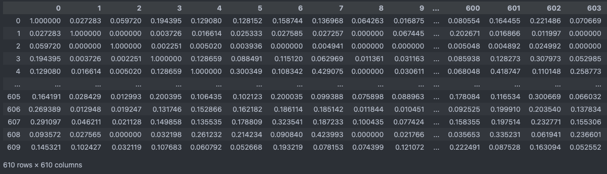

[sklearn] cosine_similarity
cosine_similarity [코사인 유사도]
-
Cosine Similarity [코사인 유사도]
코사인 유사도는 벡터 간의 유사성을 측정하는 방법 중 하나로 두 벡터 간의 각도에 기반하여 유사성을 측정하며, 벡터가 얼마나 비슷한 방향을 가지는지를 판단합니다.
그림 - https://ko.wikipedia.org/wiki/코사인_유사도 -
Euclidean distance [유클리드 거리]
유클리드 거리(Euclidean Distance)는 유사성 측정 방법 중 하나로 사용자 간 또는 아이템 간의 거리를 기반으로 유사성을 측정하는 방법입니다.
그림 - https://ko.wikipedia.org/wiki/유클리드거리
01. CF에서의 Cosine Similarity
Collaborative Filtering을 통한 추천 시스템을 구현할 때, 여러 유사성 메트릭 중 코사인 유사도를 통해서 구현하였습니다.
먼저 Collaborative Filtering이란 :
- Collaborative Filtering은 사용자의 행동 패턴을 기반으로 추천을 수행하는 기술입니다.
- 주로 사용자-아이템 행렬(User-Item Matrix)을 기반으로 작동합니다. 이 행렬은 사용자와 아이템 간의 상호 작용을 표현한 것으로, 보통 사용자가 아이템에 대한 평가 또는 구매 등의 활동을 나타냅니다.
그래서 Collaborative Filtering에서 왜 코사인 유사도를 메트릭으로 사용 했는지에 대해서 공부한 내용입니다.
-
코사인 유사도를 사용한 이유
코사인 유사도는 계산 과정에서 두 벡터 간의 각도에 기반하여 유사성을 측정하게 됩니다. 그래서 코사인 유사도를 통해서는 각도가 더 유사한 C_1을 유사하다고 판단하게 됩니다.
반면에 유클리드 거리 기반 유사도는 거리를 기반으로 유사도를 측정하기 때문에 apple이 더 많은 빈도를 보이지만 거리 상으로 가까운 banana banana를 더 유사하다고 판단하게 됩니다.
그래서 유클리드 거리는 벡터의 크기에 민감하게 되고 스케일이 다른 특성들을 가진 데이터에서는 유클리드 거리를 사용하는 것이 적절하지 않게 됩니다.
또한 이런 특성으로 인해 CF에서는 사용자-아이템 행렬이 희소한 경우가 많은데, 유클리드 거리를 사용하면 희소한 데이터에 대한 정확한 유사성 측정이 어려지게 됩니다.
그래서 두 벡터 간 크기가 아닌 각도로 유사성을 판단하는 코사인 유사도가 좋은 성능을 보이는 경향이 있습니다.
02. 코사인 유사도 계산
MovieLens small 데이터를 사용하여 진행하였습니다
link - https://grouplens.org/datasets/movielens/latest/TRAIN_PATH = "/home/brother_gyu/dev/movie_rec/data" RATING_FILE_NAME = "ratings.csv" ratings_df = pd.read_csv(os.path.join(TRAIN_PATH, RATING_FILE_NAME)) pivot_df = ratings_df.pivot_table(index='userId', columns='movieId', values='rating', fill_value=0)
02_01 sklearn 라이브러리 사용
from sklearn.metrics.pairwise import cosine_similarity
user_similarity = cosine_similarity(pivot_df)
pd.DataFrame(user_similarity)
time: 0.0388s
sklearn 라이브러리를 활용하여 간단하게 구현 할 수 있습니다.
# sklearn 라이브러리의 cosine_similarity 함수
def cosine_similarity(X, Y=None, dense_output=True):
# 입력 데이터 X와 Y가 유효한 pairwise 배열인지 확인
X, Y = check_pairwise_arrays(X, Y)
# 입력 데이터를 정규화
X_normalized = normalize(X, copy=True)
if X is Y:
Y_normalized = X_normalized
else:
Y_normalized = normalize(Y, copy=True)
# safe_sparse_dot을 사용하여 코사인 유사도를 계산
# X_normalized @ Y_normalized.T
K = safe_sparse_dot(X_normalized, Y_normalized.T, dense_output=dense_output)
return K
sklearn 라이브러리의 cosine_similarity 함수는 위와 같이 구성되어 있습니다.
다양한 데이터 형식에 대응할수 있게 작성되어 있습니다.
-
코드 나누어서 파악하기
# check_pairwise_arrays() X, Y = check_pairwise_arrays(np.array([[1,2,3]]), np.array([[4,5,6]])) # output X, Y > (array([[1., 2., 3.]]), array([[4., 5., 6.]]))유효한 pairwise 배열인지 확인을 하게 됩니다.
만약 유효하지 않다면ValueError: Expected 2D array, got 1D array instead: array=[4. 5. 6.].과 같은 ValueError를 일으킵니다.# normalize() X_normalized = normalize(X, copy=True) if X is Y: Y_normalized = X_normalized else: Y_normalized = normalize(Y, copy=True) # output X_normalized, Y_normalized > (array([[0.26726124, 0.53452248, 0.80178373]]), array([[0.45584231, 0.56980288, 0.68376346]]))normalize()를 통해 정규화를 하게 됩니다.
추가로 조건문에서 X와 Y가 같다면 X_normalized 값을 Y_normalized로 선언하면서 시간을 단축하고자 한 것을 확인 할 수 있습니다.# safe_sparse_dot() K = safe_sparse_dot(X_normalized, Y_normalized.T, dense_output=dense_output) # output K > array([[0.97463185]])safe_sparse_dot()은 행렬 곱셈을 처리하는 유틸리티 함수입니다.
X_normalized @ Y_normalized.T # output > array([[0.97463185]])위 코드와 같이 행렬 곱을 반환합니다. 하지만 safe_sparse_dot() 함수는 dense_output 매개변수를 통해 희소 행렬과 밀집 행렬 간의 곱셈을 효율적으로 처리하고, 밀집 배열과 밀집 배열 간의 곱셈도 처리할 수 있습니다.
02_02 코사인 유사도 함수 구현
import numpy as np
from collections import defaultdict
def cosine_similarity_numpy(vector1, vector2):
dot_product = np.dot(vector1, vector2)
norm_vector1 = np.linalg.norm(vector1)
norm_vector2 = np.linalg.norm(vector2)
similarity = dot_product / (norm_vector1 * norm_vector2)
return similarity
pivot_matrix = pivot_df.to_numpy()
user_similarity_dict = defaultdict(list)
for idx, x in enumerate(pivot_matrix):
for y in pivot_matrix:
user_similarity_dict[idx].append(cosine_similarity_numpy(x,y))
time: 13.0641s
코사인 유사도 공식을 함수로 만들어 유사도 행렬을 만드는 코드입니다.
결과는 sklearn 라이브러리의 코사인 유사도 행렬과 동일한 것을 확인할 수 있었지만, 400배에 가까운 시간이 더 소요되는 것을 확인할 수 있었습니다.
02_03 함수 시간 개선
def cosine_similarity_numpy_fast(X):
# 유사도 행렬 계산
user_similarity_matrix = np.dot(X, X.T)
# 각 사용자의 벡터 길이(norm) 계산
norms = np.linalg.norm(X, axis=1)
# 벡터 길이(norm)를 외적하여 벡터 길이(norm) 행렬 생성
norms_matrix = np.outer(norms, norms)
# 코사인 유사도 행렬을 각 벡터 길이(norm) 행렬로 나눠서 정규화
user_similarity_matrix /= norms_matrix
return user_similarity_matrix
similarity_matrix = cosine_similarity_numpy_fast(pivot_matrix)
# output
pd.DataFrame(similarity_matrix)

time: 0.0291s
행렬 연산으로 처리하면 sklearn 라이브러리처럼 빠른 속도로 처리할 수 있었습니다.
마치며
유클리드 거리와 코사인 유사도만 해도 같은 유사도 측정 메트릭이지만 정반대의 결과를 보였습니다.
데이터의 형태와 목적에 따라 적절한 메트릭을 판단하는 능력을 기르는 것이 중요하다고 느껴졌고, 유사도 함수를 구현해도 단순 공식대로 구현하는 것보다 행렬 연산을 활용하여 구성하는 것이 처리 속도면에서도 크게 차이가 났습니다.
메트릭 수식을 행렬 연산을 결합하는 것이 쉽지는 않지만 노력해야 되는 부분인것 같고, 평소에 별다른 생각 없이 사용만 하던 sklearn 코사인 유사도 코드를 파악해볼 수 있는 좋은 기회였습니다.
댓글남기기